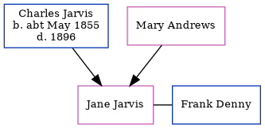

Mary Ann Jane Jarvis (née Andrews)
[ Home ] | [ Calendar ] | [ Surnames Index ] | [ Census Index ] | [ Family History ]Mary Andrews and had 1 child with Charles George Jarvis: Jane.
Family Tree
Generated by ged2site. Last updated on Jun 11, 2024